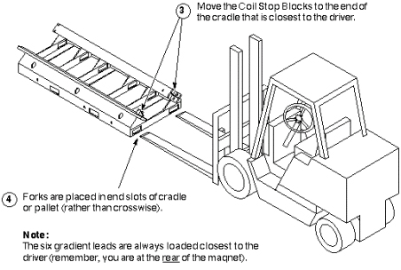

Forks are placed in end slots of cradle or pallet (rather than crosswise).
The six gradient leads are always loaded closest to the driver (remember, you are working at the rear of the magnet).
The Coil Retainer Blocks get moved to the end of the cradle closest to the driver.
Illustration 11: LIFT DRIVER GETS EMPTY CRADLE
